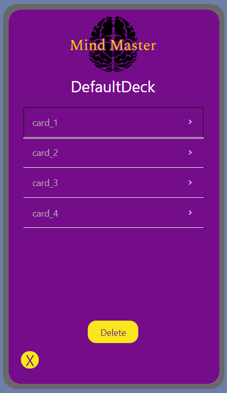
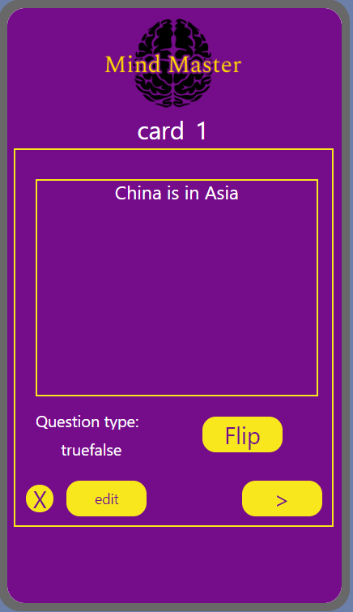

Use MindMaster to create personalized decks of flashcards to study exams, master new languesage, encgahnce your trivian knowledge, and more. MindMaster creates dyimnamic quizzes featuring true/false and multi-choice questions to help elevate your learning expereince. Experience the convenience of on-the-go learning and the joy of mastering new concepts with Mind Master – where knowledge meets innovation.
After signing up and logging in to MindMaster, you will be directed to the homescreen. From there you can Create Cards and Decks by clicking the Create Cards button. You can view your cards and decks by CLicking the "View Flash Cards Button". You take a quick quiz generated by MindMaster using any of your created decks by clicking the "Quick Quiz Button". You can also edit your account by clicking the "Settings" button and sign out by clicking the "Sign Out" button.
Here you can create either multi-choice or true/false flashcards. You can then add these cards to existing deck by clicking on the select Deck Button or create a new deck and add the card there. When all the options have been out, click the "Save Flash Card" button to save your card.
Here you can edit and delete cards and decks. To view a deck click on the deck desired where you can then view the flash cards within. To a delete deck, click the delete button, then select the Deck you wish to delete. You can also create new decks on this screen.
|  |  |
When viewing individual decks, you can view the cards by clicking on them indvidually or you can delete them by clicking on the delete button and selecting the card you wish to delete. When viewing an individual card, you can click the left and right arrows to scroll through the deck. You are also able to edit the cards by clicking on the edit button.
Here you can choose which deck you would like MindMaster to create a quiz from and click the "Start Quiz" button. From here, MindMaster will create a quiz based on the chosen deck for you to study from.
Here you can edit your account informaton like changing your username and password